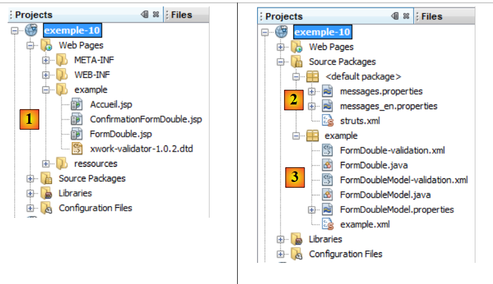
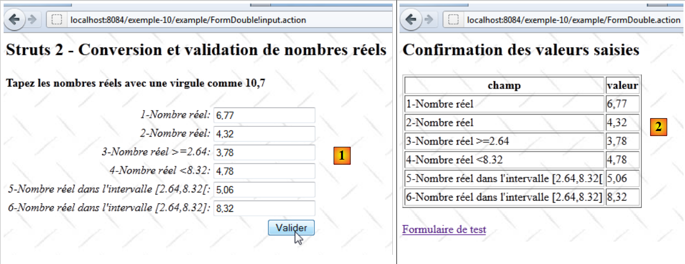

13. المثال 10 – تحويل الأعداد الحقيقية والتحقق من صحتها
يتميز التطبيق الجديد بإدخال الأعداد الحقيقية:
 |
- في [1]، نموذج الإدخال
- في [2]، الاستجابة المعادة
يعمل التطبيق بشكل مشابه لإدخال الأعداد الصحيحة، لذا سنعلق فقط على النقاط التي تختلف.
13.1. مشروع NetBeans
مشروع NetBeans هو كما يلي:
 |
- في [1]، طرق عرض التطبيق
- [Accueil.jsp]: الصفحة الرئيسية
- [FormDouble.jsp]: نموذج الإدخال
- [ConfirmationDouble.jsp]: صفحة التأكيد
- في [2]، ملف الرسائل [messages.properties] وملف التكوين الرئيسي لـ Struts
- في [3]:
- [FormDouble.java]: الإجراء الذي يعرض النموذج ويعالجه
- [FormDouble-validation.xml]: قواعد التحقق من صحة الإجراء [FormDouble]. يفوض هذا الملف عمليات التحقق هذه إلى النموذج باستخدام الطريقة التي تمت مناقشتها للتو.
- [FormDoubleModel]: النموذج الخاص بعملية [FormDouble]
- [FormDoubleModel-validation.xml]: قواعد التحقق من صحة النموذج
- [FormDoubleModel.properties]: ملف رسائل النموذج
- [example.xml]: ملف تكوين Struts الثانوي
13.2. تكوين المشروع
يتم تكوين المشروع بشكل أساسي بواسطة ملف [example.xml] التالي:
<?xml version="1.0" encoding="UTF-8" ?>
<!DOCTYPE struts PUBLIC
"-//Apache Software Foundation//DTD Struts Configuration 2.0//EN"
"http://struts.apache.org/dtds/struts-2.0.dtd">
<struts>
<package name="example" namespace="/example" extends="struts-default">
<action name="Accueil">
<result name="success">/example/Accueil.jsp</result>
</action>
<action name="FormDouble" class="example.FormDouble">
<result name="input">/example/FormDouble.jsp</result>
<result name="cancel" type="redirect">/example/Accueil.jsp</result>
<result name="success">/example/ConfirmationFormDouble.jsp</result>
</action>
</package>
</struts>
وهو مشابه لما تمت مناقشته بشأن إدخال الأعداد الصحيحة.
13.3. ملفات الرسائل
ملف [messages.properties] هو كما يلي:
Accueil.titre=Accueil
Accueil.message=Struts 2 - Conversions et validations
Accueil.FormDouble=Saisie de nombres r\u00e9els
Form.titre=Conversions et validations
FormDouble.message=Struts 2 - Conversion et validation de nombres r\u00e9els
FormDouble.conseil=Tapez les nombres r\u00e9els avec une virgule comme 10,7
Form.submitText=Valider
Form.cancelText=Annuler
Form.clearModel=Raz mod\u00e8le
Confirmation.titre=Confirmation
Confirmation.message=Confirmation des valeurs saisies
Confirmation.champ=champ
Confirmation.valeur=valeur
Confirmation.lien=Formulaire de test
xwork.default.invalid.fieldvalue=Valeur invalide pour le champ "{0}".
ملف [FormDoubleModel.properties] كما يلي:
double.format={0,number}
double1.prompt=1-Nombre r\u00E9el
double1.error=Tapez un nombre r\u00E9el
double2.prompt=2-Nombre r\u00E9el
double2.error=Tapez un nombre r\u00E9el
double3.prompt=3-Nombre r\u00E9el >=2.64
double3.error=Tapez un nombre r\u00E9el >=2.64
double4.prompt=4-Nombre r\u00E9el <8.32
double4.error=Tapez un nombre r\u00E9el <8.32
double5.prompt=5-Nombre r\u00E9el dans l''intervalle [2.64,8.32[
double5.error=Tapez un nombre r\u00E9el dans l''intervalle [2.64,8.32[
double6.prompt=6-Nombre r\u00E9el dans l''intervalle [2.64,8.32]
double6.error=Tapez un nombre r\u00E9el dans l''intervalle [2.64,8.32]
السطر 1 يلعب دورًا مهمًا. سنعود إليه لاحقًا.
13.4. نموذج الإدخال
تبدو طريقة العرض [FormDouble.jsp] كما يلي:
<%@ page contentType="text/html; charset=UTF-8" pageEncoding="UTF-8"%>
<%@ taglib prefix="s" uri="/struts-tags" %>
<html>
<head>
<title><s:text name="Form.titre"/></title>
<s:head/>
</head>
<body background="<s:url value="/ressources/standard.jpg"/>">
<h2><s:text name="FormDouble.message"/></h2>
<h4><s:text name="FormDouble.conseil"/></h4>
<s:form name="formulaire" action="FormDouble">
<s:textfield name="double1" key="double1.prompt"/>
<s:textfield name="double2" key="double2.prompt" value="%{#parameters['double2']!=null ? #parameters['double2'] : double2==null ? '' :getText('double.format',{double2})}"/>
<s:textfield name="double3" key="double3.prompt" value="%{#parameters['double3']!=null ? #parameters['double3'] : double3==null ? '' :getText('double.format',{double3})}"/>
<s:textfield name="double4" key="double4.prompt" value="%{#parameters['double4']!=null ? #parameters['double4'] : double4==null ? '' :getText('double.format',{double4})}"/>
<s:textfield name="double5" key="double5.prompt" value="%{#parameters['double5']!=null ? #parameters['double5'] : double5==null ? '' :getText('double.format',{double5})}"/>
<s:textfield name="double6" key="double6.prompt"/>
<s:submit key="Form.submitText" method="execute"/>
</s:form>
<br/>
<s:url id="url" action="FormDouble" method="cancel"/>
<s:a href="%{url}"><s:text name="Form.cancelText"/></s:a>
<br/>
<s:url id="url" action="FormDouble" method="clearModel"/>
<s:a href="%{url}"><s:text name="Form.clearModel"/></s:a>
</body>
</html>
الأسطر من 13 إلى 18 هي حقول الإدخال الستة للأرقام الحقيقية. تحتوي الحقول من double2 إلى double5 على سمة قيمة معقدة. عادةً، يجب أن تكون حقول الإدخال الستة كما يلي:
<s:textfield name="double1" key="double1.prompt"/>
<s:textfield name="double2" key="double2.prompt"/>
<s:textfield name="double3" key="double3.prompt"/>
<s:textfield name="double4" key="double4.prompt"/>
<s:textfield name="double5" key="double5.prompt"/>
<s:textfield name="double6" key="double6.prompt"/>
لحل بعض المشكلات التي واجهناها أثناء الاختبار، اضطررنا إلى جعل الأمور أكثر تعقيدًا. في الوقت الحالي، يمكن للقارئ تجاهل هذا التعقيد. سنشرحه لاحقًا.
13.5. عرض التأكيد
تبدو شاشة التأكيد [ConfirmationFormDouble.jsp] كما يلي:

وإليك كودها:
<%@ page contentType="text/html; charset=UTF-8" pageEncoding="UTF-8"%>
<%@ taglib prefix="s" uri="/struts-tags" %>
<html>
<head>
<title><s:text name="Confirmation.titre"/></title>
<s:head/>
</head>
<body background="<s:url value="/ressources/standard.jpg"/>">
<h2><s:text name="Confirmation.message"/></h2>
<table border="1">
<tr>
<th><s:text name="Confirmation.champ"/></th>
<th><s:text name="Confirmation.valeur"/></th>
</tr>
<tr>
<td><s:text name="double1.prompt"/></td>
<td><s:text name="double1"/></td>
</tr>
<tr>
<td><s:text name="double2.prompt"/></td>
<td>
<s:text name="double.format">
<s:param value="double2"/>
</s:text>
</td>
</tr>
<tr>
<td><s:text name="double3.prompt"/></td>
<td>
<s:text name="double.format">
<s:param value="double3"/>
</s:text>
</td>
</tr>
<tr>
<td><s:text name="double4.prompt"/></td>
<td>
<s:text name="double.format">
<s:param value="double4"/>
</s:text>
</td>
</tr>
<tr>
<td><s:text name="double5.prompt"/></td>
<td>
<s:text name="double.format">
<s:param value="double5"/>
</s:text>
</td>
</tr>
<tr>
<td><s:text name="double6.prompt"/></td>
<td><s:text name="double6"/></td>
</tr>
</table>
<br/>
<s:url id="url" action="FormDouble!input"/>
<s:a href="%{url}"><s:text name="Confirmation.lien"/></s:a>
</body>
</html>
تعرض صفحة [ConfirmationFormDouble.jsp] ببساطة [FormDoubleModel]. توضح الأسطر 47-49 كيفية عرض رقم حقيقي. نريد أن يأخذ هذا العرض لغة التطبيق في الاعتبار. اعتمادًا على اللغة، لن يتم عرض الرقم الحقيقي بنفس الطريقة في فرنسا (10,7) كما في المملكة المتحدة (10.7). لتحقيق ذلك، نستخدم علامة <s:text>، التي استخدمناها سابقًا لتدويل التطبيق. وبالتالي، تُستخدم هذه العلامة أيضًا للتوطين.
هنا، مفتاح الرسالة المستخدم هو double.format. يوجد هذا المفتاح في ملف [FormDoubleModel.properties]:
double.format={0,number}
القيمة المرتبطة بالمفتاح ليست رسالة هنا، بل تنسيق عرض:
- 0 هو معلمة تمثل القيمة المراد عرضها. هنا، سيكون حقل double5 في النموذج.
- number يمثل التنسيق الرقمي. سيتم تكييفه مع كل بلد. بدون هذا التنسيق، سيتم عرض الرقم 10.7 دائمًا على أنه 10.7 بغض النظر عن البلد.
العلامة
<s:text name="double.format">
<s:param value="double5"/>
</s:text>
يعرض الرسالة {0, number}، حيث يحل المعامل double5 (السطر 2) محل المعامل 0 في التنسيق. وبالتالي، سيتم عرض القيمة double5 بالتنسيق الرقمي المترجم.
13.6. قالب [FormDoubleModel]
يتم إدراج الحقول من double1 إلى double6 من النموذج [FormDouble.jsp] في القالب [FormDoubleModel] التالي:
package example;
public class FormDoubleModel {
// constructor without parameters
public FormDoubleModel() {
}
// fields
private String double1;
private Double double2;
private Double double3;
private Double double4;
private Double double5;
private String double6;
// raz model
public void clearModel() {
double1 = null;
double2 = null;
double3 = null;
double4 = null;
double5 = null;
double6 = null;
}
// getters and setters
...
}
- الحقول double1 و double6 من النوع String
- أما الحقول الأخرى فهي من النوع Double
13.7. التحقق من صحة النموذج
يتم التحكم في التحقق من صحة النموذج بواسطة ملفين: [FormDouble-validation.xml] و [FormDoubleModel-validation.xml].
يقوم ملف [FormDouble-validation.xml] بتفويض عمليات التحقق من صحة البيانات إلى ملف [FormDoubleModel-validation.xml]:
<!--
<!DOCTYPE validators PUBLIC "-//OpenSymphony Group//XWork Validator 1.0.2//
EN" "http://www.opensymphony.com/xwork/xwork-validator-1.0.2.dtd">
-->
<!DOCTYPE validators PUBLIC "-//OpenSymphony Group//XWork Validator 1.0.2//
EN" "http://localhost:8084/exemple-10/example/xwork-validator-1.0.2.dtd">
<validators>
<field name="model" >
<field-validator type="visitor">
<param name="appendPrefix">false</param>
<message/>
</field-validator>
</field>
</validators>
لقد صادفنا هذا الملف من قبل.
يحتوي ملف [FormDoubleModel-validation.xml] على قواعد التحقق من الصحة التالية:
<!--
<!DOCTYPE validators PUBLIC "-//OpenSymphony Group//XWork Validator 1.0.2//
EN" "http://www.opensymphony.com/xwork/xwork-validator-1.0.2.dtd">
-->
<!DOCTYPE validators PUBLIC "-//OpenSymphony Group//XWork Validator 1.0.2//
EN" "http://localhost:8084/exemple-10/example/xwork-validator-1.0.2.dtd">
<validators>
<field name="double1" >
<field-validator type="requiredstring" short-circuit="true">
<message key="double1.error"/>
</field-validator>
<field-validator type="regex" short-circuit="true">
<param name="expression">^[+|-]*\s*\d+(,\d+)*$</param>
<param name="trim">true</param>
<message key="double1.error"/>
</field-validator>
</field>
<field name="double2" >
<field-validator type="required" short-circuit="true">
<message key="double2.error"/>
</field-validator>
<field-validator type="conversion" short-circuit="true">
<message key="double2.error"/>
</field-validator>
</field>
<field name="double3" >
<field-validator type="required" short-circuit="true">
<message key="double3.error"/>
</field-validator>
<field-validator type="conversion" short-circuit="true">
<message key="double3.error"/>
</field-validator>
<field-validator type="double" short-circuit="true">
<param name="minInclusive">2.64</param>
<message key="double3.error"/>
</field-validator>
</field>
<field name="double4" >
<field-validator type="required" short-circuit="true">
<message key="double4.error"/>
</field-validator>
<field-validator type="conversion" short-circuit="true">
<message key="double4.error"/>
</field-validator>
<field-validator type="double" short-circuit="true">
<param name="maxExclusive">8.32</param>
<message key="double4.error"/>
</field-validator>
</field>
<field name="double5" >
<field-validator type="required" short-circuit="true">
<message key="double5.error"/>
</field-validator>
<field-validator type="conversion" short-circuit="true">
<message key="double5.error"/>
</field-validator>
<field-validator type="double" short-circuit="true">
<param name="minInclusive">2.64</param>
<param name="maxExclusive">8.32</param>
<message key="double5.error"/>
</field-validator>
</field>
<field name="double6" >
<field-validator type="requiredstring" short-circuit="true">
<message key="double6.error"/>
</field-validator>
<field-validator type="regex" short-circuit="true">
<param name="expression">^[+|-]*\s*\d+(,\d+)*$</param>
<param name="trim">true</param>
<message key="double6.error"/>
</field-validator>
</field>
</validators>
- تتحقق القاعدة في الأسطر 12–21 من أن حقل الإدخال double1 يطابق نمط تعبير عادي يمثل عددًا حقيقيًا.
- تتحقق القاعدة في الأسطر 23-30 من أن حقل الإدخال double2 يمكن تحويله إلى عدد حقيقي مزدوج الدقة.
- تتحقق القاعدة في الأسطر 32–43 من أن حقل الإدخال `double3` يمكن تحويله إلى عدد حقيقي مزدوج الدقة أكبر من أو يساوي 2.64. لاحظ أنه يجب استخدام الترميز الأنجلوساكسوني للأعداد الحقيقية.
- تتحقق القاعدة في الأسطر 45-56 من أن حقل الإدخال double4 يمكن تحويله إلى عدد حقيقي مزدوج الدقة < 8.32.
- تتحقق القاعدة في الأسطر 58-70 من أن حقل الإدخال double5 يمكن تحويله إلى عدد حقيقي مزدوج الدقة في الفترة [2.64, 8.32[.
- تتحقق القاعدة في الأسطر 72–80 من أن حقل double6 يتبع نمط تعبير عادي يمثل عددًا حقيقيًا.
بمجرد معالجة ملف [FormDoubleModel-validation.xml] بواسطة مانع التحقق من الصحة، يقوم هذا الأخير بتنفيذ طريقة validate الخاصة بعملية [FormDouble]، إن وجدت. وسنقدمها مع العملية بأكملها.
13.8. الإجراء [FormDouble]
يكون الإجراء [FormDouble] كما يلي:
package example;
import com.opensymphony.xwork2.ActionSupport;
import com.opensymphony.xwork2.ModelDriven;
import java.util.Map;
import org.apache.struts2.interceptor.SessionAware;
import org.apache.struts2.interceptor.validation.SkipValidation;
public class FormDouble extends ActionSupport implements ModelDriven, SessionAware {
// constructor without parameters
public FormDouble() {
}
// action model
public Object getModel() {
if (session.get("model") == null) {
session.put("model", new FormDoubleModel());
}
return session.get("model");
}
@SkipValidation
public String clearModel() {
// close to the model
((FormDoubleModel) getModel()).clearModel();
// result
return INPUT;
}
public String cancel() {
// cleaning the model
((FormDoubleModel) getModel()).clearModel();
// result
return "cancel";
}
// SessionAware
Map<String, Object> session;
public void setSession(Map<String, Object> session) {
this.session = session;
}
// validation
@Override
public void validate() {
// valid double6 entry?
if (getFieldErrors().get("double6") == null) {
// replace the comma with a period in the double6 string
String strDouble6 = (((FormDoubleModel) getModel()).getDouble6()).replace(',', '.');
// String --> double
double double6 = Double.parseDouble(strDouble6);
// check
if (double6 < 2.64 || double6 > 8.32) {
addFieldError("double6", getText("double6.error"));
}
}
}
}
تم إنشاء الإجراء [FormDouble] على نفس نموذج الإجراء [FormInt]. سنكتفي بالتعليق على طريقة validate. لاحظ أن طريقة validate يتم تنفيذها بعد معالجة ملف التحقق [FormDoubleModel-validation.xml] وقبل استدعاء طريقة execute.
- السطر 48: إذا كانت هناك أخطاء موجودة بالفعل في حقل double6، فلن يتم اتخاذ أي إجراء آخر.
- السطر 50: تلقينا سلسلة نصية بالصيغة 45.67. تم تخزينها في حقل double6 للنموذج. نستبدل الفاصلة بنقطة للحصول على 45.67.
- السطر 52: يتم تحويل السلسلة 45.67 إلى رقم عائم مزدوج الدقة. من المفترض أن يعمل هذا لأن السلسلة في حقل double6 تتبع تنسيق الرقم الحقيقي.
- السطر 54: نتحقق من أن الرقم double الناتج يقع في النطاق [2.64، 8.32].
- السطر 55: إذا لم يكن الأمر كذلك، يتم إرفاق رسالة الخطأ الخاصة بمفتاح double6.error بحقل double6. ستوجد هذه الرسالة في ملف [FormDoubleModel.properties]. وسيتم عرضها عند إعادة عرض النموذج الذي يحتوي على الخطأ.
13.9. التفاصيل النهائية
الآن، لنعد إلى تعقيد حقول الإدخال في النموذج [FormDouble.jsp]. سنركز على الحقل double2. ينطبق هذا المنطق على الحقول من double3 إلى double5، التي لها نموذج Double. بالنسبة للحقول double1 و double6، التي لها نموذج String، لا توجد مشكلة.
حقل الإدخال double2 هو كما يلي:
<s:textfield name="double2" key="double2.prompt" value="%{#parameters['double2']!=null ? #parameters['double2'] : double2==null ? '' :getText('double.format',{double2})}"/>
لنبدأ بأبسط علامة:
<s:textfield name="double2" key="double2.prompt"/>
ولنرى ما سيحدث:
 |
- في [1]، نتحقق من صحة الرقم double2. الأمر ليس واضحًا تمامًا في لقطة الشاشة، لكننا أدخلنا الرقم مع علامة عشرية.
- في [2]، شاشة التأكيد. اجتاز الإدخال double2 فحوصات التحقق من الصحة. يتم عرض الرقم مع نقطة عشرية.
 |
- في [3]، نعود إلى النموذج
- في [4]، النموذج. ما لا تظهره لقطة الشاشة بوضوح هو أن الرقم double2، الذي كان في البداية 4.32، أصبح 4.32 مع نقطة عشرية.
 |
- في [5]، نعيد إرسال النموذج دون تغيير أي شيء
- في [6]، يتم الإبلاغ عن خطأ في حقل double2.
المشكلة هي كما يلي:
- في البداية في [1]، تم تحويل سلسلة الإدخال "4,32" بنجاح إلى الرقم العائم 4.32. وهذا يعني أن تحويل String-to-Double كان ناجحًا وأن Struts يأخذ الإعدادات المحلية في الاعتبار في هذا السياق — في هذه الحالة، فرنسا.
- يعرض النموذج الجديد [4] الرقم الحقيقي 4.32 في حقل double2. نظرًا لأن العرض لم يتم توطينه، فإنه يعود افتراضيًا إلى التنسيق الأنجلوساكسوني، أي مع نقطة عشرية. لذلك، في الاتجاه من Double إلى String، لم يعد Struts يأخذ الإعدادات المحلية في الاعتبار؛ وإلا لكان قد عرض 4.32 بفاصلة.
هذا غير متسق، على أقل تقدير. لكن لا بأس، سنقوم بترجمة عرض الرقم 4.32. تصبح علامة الإدخال كما يلي:
<s:textfield name="double2" key="double2.prompt" value="%{getText('double.format',{double2})}"/>
تحدد السمة value القيمة التي سيتم عرضها في الحقل double2. هذا تعبير OGNL. تذكر تعريف المفتاح double.format في ملف [FormDoubleModel.properties]:
double.format={0,number}
تسترد طريقة getText('key') الرسالة المرتبطة بمفتاح. يتم البحث عن هذه الرسالة في الملف المطابق للإعدادات المحلية الحالية. وبالتالي، إذا كانت الإعدادات المحلية هي es (إسبانيا)، فسيتم البحث عن مفتاح double.format في ملف [FormDoubleModel_es.properties].
تسترد الطريقة getText('key', {param0, param1, ...}) رسالة معلمة. الرسالة
هي رسالة معلمة بالمعلمة 0. هذه معلمة موضعية. ستقوم الطريقة getText('double.format', {double2}) بتعيين الرقم double2 للمعلمة 0. في النهاية، نطلب قيمة double2 بالتنسيق الرقمي المترجم. في فرنسا، سيتم ترجمة الرقم 4.56 إلى السلسلة "4,56".
بعد هذا التغيير، نجري الاختبارات مرة أخرى.
 |
بمجرد عرض النموذج لأول مرة، تظهر مشكلة في [1]. لنعد إلى العلامة:
<s:textfield name="double2" key="double2.prompt" value="%{getText('double.format',{double2})}"/>
عند العرض الأولي، تكون قيمة نموذج double2 هي null، وهي قيمة غير رقمية. نقوم بتعديل العلامة على النحو التالي:
<s:textfield name="double2" key="double2.prompt" value="%{double2==null ? '' : getText('double.format',{double2})}"/>
هذه المرة، نتحقق مما إذا كان double2==null. إذا كان الأمر كذلك، نعرض سلسلة فارغة.
بعد إجراء هذا التغيير، نستأنف الاختبار:
 |
 |
تُظهر الشاشات من [1] إلى [4] أن المشكلة التي كنا نحاول حلها قد تم حلها:
- في [1]، ندخل 4.67
- في [2]، تم قبول هذا الرقم
- في [3]، يتم عرضه مرة أخرى على أنه 4.67 مع النقطة العشرية، وهو ما تؤكده [4].
لسوء الحظ، لا تنتهي المشاكل عند هذا الحد. لنلقِ نظرة على المتتابعة التالية:
 |
- في [5]، تمت إضافة حرف لإبطال صحة double2
- في [6]، أدت عمليات التحقق من الصحة دورها وتم الإبلاغ عن الخطأ. ومع ذلك، فإن السلسلة المعروضة في [6] ليست السلسلة الخاطئة بل القيمة الحالية لنموذج double2. وقد فُقدت القيمة التي تم إدخالها.
عند الانتقال من [5] إلى [6]، لا يكتمل الطلب. يتم إيقافه بواسطة مانع التحقق من الصحة. في [6]، قمنا بعرض قيمة نموذج double2، الذي لم يتلقَ قيمة جديدة بسبب هذا الانقطاع. لذلك، يتم عرض قيمته السابقة، في حين كان من المفترض عرض السلسلة التي تم إدخالها. يمكن الوصول إلى معلمات الطلب عبر الترميز #parameters['param']. نقوم بتحديث حقل الإدخال double2 على النحو التالي:
<s:textfield name="double2" key="double2.prompt" value="%{#parameters['double2']!=null ? #parameters['double2'] : double2==null ? '' : getText('double.format',{double2})}"/>
يتم حساب القيمة المعروضة لحقل double2 على النحو التالي: إذا كانت المعلمة 'double2' موجودة، يتم عرضها؛ وإلا، يتم عرض القالب double2. ندعو القارئ إلى اختبار ما إذا كانت هذه النسخة الجديدة من العلامة تحل المشكلات التي تمت مواجهتها.
13.10. الخلاصة
من المدهش أن إدخال الأعداد الحقيقية مع فحوصات الصحة أمر معقد للغاية... ربما فاتني شيء ما في الوثائق؟